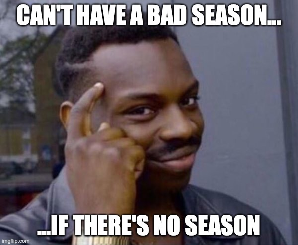

TRANSCRIPTION: "Separate Ways (Worlds Apart)" - Steve Smith with Journey

I realize that I look a lot of intense stuff on the blog, so let’s calm down with some Steve Smith. I wouldn’t stay this is necessarily easy, but probably more... accessible to the average drummer. I did this for fun a while back; “Separate Ways” has always been a favorite of my college marching band. I'm not exactly sure why, but you know how it goes. To be fair, we do have a pretty kickass arrangement, stolen from the University of Oregon’s band (we kick ours up a notch to 150 BPM):
The CU band did a full Journey show my Sophomore year, which we premiered almost exactly four years ago on October 1st. Truth be told, I’ve never been huge on Journey; a friend of mine once described Journey as “cheese rock”. I can’t say I disagree… still, I like Steve Smith as a drummer and an educator. He’s got some cool moves on the drum solo for this track, so I took a quick look at it. Have fun while I reminisce about the fleeting moment when CU football was good. Also, remember when there was college football to watch?
"Separate Ways (Worlds Apart)" on Spotify and Apple Music.